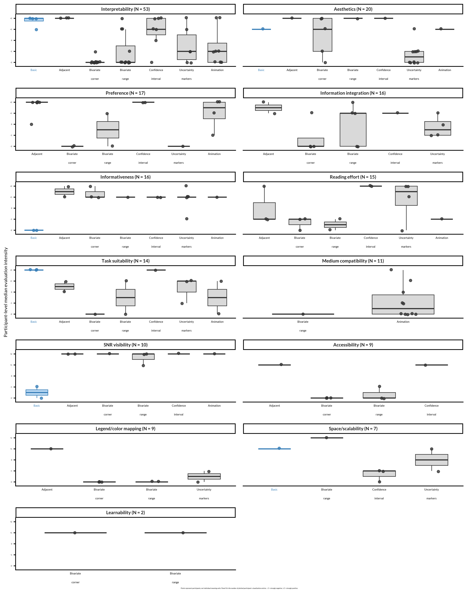

| Theme | Explanation |
|---|---|
| Accessibility | Usability across color vision, devices, or other viewer needs. |
| Aesthetics | Visual attractiveness, cleanliness, or perceived ugliness. |
| Information integration | How well multiple quantities are combined without obscuring one another. |
| Informativeness | Amount or usefulness of information communicated. |
| Interpretability | Ease or difficulty of understanding what the visualization means. |
| Learnability | Whether interpretation becomes easier with exposure or practice. |
| Legend/color mapping | Clarity and intuitiveness of colors, scales, and their legends. |
| Medium compatibility | Suitability for print, papers, presentations, screens, or animation. |
| Preference | An explicit choice, ranking, liking, or dislike. |
| Reading effort | Time, attention, or cognitive effort required to extract information. |
| SNR visibility | How clearly signal-to-noise ratio or uncertainty can be identified. |
| Space/scalability | Figure size, visual density, or ability to accommodate multiple plots. |
| Task suitability | Usefulness for a particular analytical or comparison task. |
Open-ended feedback
Participants included in the qualitative content analysis: 54.
Meaning units extracted: 240
Participant comments are presented in two groups. Select an Expand button to read the responses.
Qualitative content analysis
ID links every unit to its original A305 response. Participant wording is retained as closely as possible; themes and intensities are interpretive codes. Use the search box or column filters to explore the table.
For the new responses, references to bivariate plots without an identified variant are coded as General bivariates. Proposed redesigns are included only when they express an evaluation of the displayed visualization; suggestions alone are not assigned an intensity.
Download the coded content analysis as an Excel workbook
Theme codebook
Coded meaning units
Evaluation intensity by theme and visualization type
This descriptive analysis gives each participant at most one value within each visualization–theme combination. It therefore avoids treating multiple meaning units from the same participant as independent observations. Comments coded as General bivariates are retained in the original dataset but excluded here because they do not identify one of the seven visualization types.
Code
intensity_axis_labels <- c(
`-2` = "−2",
`-1` = "−1",
`0` = "0",
`1` = "+1",
`2` = "+2"
)
visualization_axis_labels <- c(
Basic = "<span style='color:#377EB8'>Basic</span>",
Adjacent = "Adjacent",
`Bivariate corner` = "Bivariate<br>corner",
`Bivariate range` = "Bivariate<br>range",
`Confidence interval` = "Confidence<br>interval",
`Uncertainty markers` = "Uncertainty<br>markers",
Animation = "Animation"
)
theme_panel_counts <- a305_participant_theme |>
count(theme, name = "n_entries") |>
arrange(desc(n_entries), theme)
theme_panel_order <- theme_panel_counts$theme
theme_panel_labels <- setNames(
paste0(
theme_panel_counts$theme,
" (N = ",
theme_panel_counts$n_entries,
")"
),
theme_panel_counts$theme
)
a305_intensity_plot_data <- a305_participant_theme |>
mutate(theme = factor(theme, levels = theme_panel_order))
a305_intensity_by_theme_figure <- ggplot(
a305_intensity_plot_data,
aes(
x = visualization,
y = median_intensity,
colour = visualization == "Basic",
fill = visualization == "Basic"
)
) +
geom_boxplot(
width = 0.62,
outlier.shape = NA,
linewidth = 0.6
) +
geom_point(
position = position_jitter(
width = 0.16,
height = 0.06,
seed = 2025
),
size = 2.4,
alpha = 0.8
) +
facet_wrap(
vars(theme),
scales = "free_x",
ncol = 2,
labeller = as_labeller(theme_panel_labels)
) +
scale_x_discrete(labels = visualization_axis_labels, drop = TRUE) +
scale_colour_manual(
values = c(`FALSE` = "#333333", `TRUE` = "#377EB8"),
guide = "none"
) +
scale_fill_manual(
values = c(`FALSE` = "#D9D9D9", `TRUE` = "#B9D8F2"),
guide = "none"
) +
scale_y_continuous(
limits = c(-2.15, 2.15),
breaks = -2:2,
labels = intensity_axis_labels,
minor_breaks = NULL
) +
labs(
x = NULL,
y = "Participant-level median evaluation intensity",
caption = paste(
"Points represent participants, not individual meaning units.",
"Panel N is the number of plotted participant–visualization entries.",
"−2 = strongly negative; +2 = strongly positive."
)
) +
theme_classic(base_family = "Lato", base_size = 18) +
theme(
strip.text = element_text(face = "bold", size = 40),
axis.text.x = ggtext::element_markdown(
size = 24,
lineheight = 0.85,
margin = margin(t = 6)
),
axis.text.y = element_text(size = 16),
axis.title.y = element_text(size = 40),
axis.ticks.x = element_blank(),
panel.spacing = unit(1.2, "lines"),
plot.caption = element_text(hjust = 0.5, face = "italic", size = 14)
)
a305_intensity_by_theme_figure
Code
ggsave(
project_path("figures", "a305_intensity_by_theme_figure.png"),
a305_intensity_by_theme_figure,
width = 15,
height = 19,
units = "in",
dpi = 180,
device = ragg::agg_png,
bg = "white"
)Participant-based summary
Sample sizes count unique participants. Medians and means are calculated from the participant-level medians shown in the figure, not directly from meaning units.
Code
a305_intensity_summary |>
mutate(
visualization = as.character(visualization),
median_intensity = round(median_intensity, 2),
mean_intensity = round(mean_intensity, 2)
) |>
select(
theme,
visualization,
n_participants,
median_intensity,
mean_intensity
) |>
reactable::reactable(
searchable = TRUE,
filterable = TRUE,
striped = TRUE,
highlight = TRUE,
bordered = TRUE,
defaultPageSize = 20,
showPageSizeOptions = TRUE,
pageSizeOptions = c(10, 20, 50, 100),
columns = list(
theme = reactable::colDef(name = "Theme", minWidth = 170),
visualization = reactable::colDef(
name = "Visualization type",
minWidth = 160
),
n_participants = reactable::colDef(
name = "Participants",
align = "center"
),
median_intensity = reactable::colDef(
name = "Median intensity",
align = "center",
format = reactable::colFormat(digits = 2)
),
mean_intensity = reactable::colDef(
name = "Mean intensity",
align = "center",
format = reactable::colFormat(digits = 2)
)
)
)Original responses
Code
feedback_A305 <- data %>%
transmute(
ID,
feedback = stringr::str_squish(as.character(A305_01))
) %>%
mutate(
feedback = na_if(feedback, ""),
feedback = na_if(feedback, "-9"),
feedback = na_if(feedback, "NA")
) %>%
filter(!is.na(feedback))Code
feedback_A306 <- data %>%
transmute(
ID,
feedback = stringr::str_squish(as.character(A306_01))
) %>%
mutate(
feedback = na_if(feedback, ""),
feedback = na_if(feedback, "-9"),
feedback = na_if(feedback, "NA")
) %>%
filter(!is.na(feedback))Comments specifically about the visualizations used in the study.
NoteVisualization feedback — Expand
Code
feedback_A305 %>%
mutate(
feedback = stringr::str_wrap(feedback, width = 100)
) %>%
split(.$ID) %>%
purrr::iwalk(function(x, id) {
cat(
"\nID:", id, "\n",
x$feedback,
"\n",
paste(rep("-", 100), collapse = ""),
"\n",
sep = ""
)
})
ID:2
,
----------------------------------------------------------------------------------------------------
ID:6
Bivariate color plot: corner version Forget about it, I am not a color blind person and even so I
couldn't distinguish colors mapping from legend to scalp. Horrible, hard, but informative. Bivariate
color plot: range version: I think overall this can be the most useful if limited by figure number /
size, ebcause it contains all the information in one scalp and it's pretty much straightforward and
intuitive. Basic topoplot: I am not sure that helps so much inferring the SNR, although it always
matches aesthetic expectations for us in the field. Adjacent plots: Probably the most informative
one. Maybe it takes a bit more to readout, but it's the cleanest way to show SE distributions and
scalp potential. I would go for this one. Hypothetitcal outcome plot: I challange you to use it in
a printed paper!! Confidence interval plot: Also informative, less intuitive, but clean readout. I
don't like the overdensity of figures and small scalp sizes. Uncertainty markers: maybe useful, but
horrible and not so straightforward. Forget about it!!
----------------------------------------------------------------------------------------------------
ID:7
Bivariate plots make it very easy to pinpoint SNR at specific site if this is the task, but they are
hard make sense from overall. Maybe, if i really needed to show specifically SNR, i would just add
3rd SNR plot to adjacent plots.
----------------------------------------------------------------------------------------------------
ID:9
My favourite was the confidence interval plot if I wanted to show the range of topos. Instead of
having all three the same size I would have the mean a bit larger with the Mean-SE and Mean+SE a bit
smaller.
----------------------------------------------------------------------------------------------------
ID:10
some of the visualizations added more uncertanity about the decision to make. I think adding more
color adds complexity.
----------------------------------------------------------------------------------------------------
ID:11
The colors of the mixed colors plot are too comfising and not coloblind friendly
----------------------------------------------------------------------------------------------------
ID:13
The bivariate color plot is rich in information, but difficult at first to interpret. I imagine a
few exposures would do the trick for me. Also, the polar colors need to be very distinct. Perhaps
complementary colors would work.
----------------------------------------------------------------------------------------------------
ID:14
The Bivariate color plot was very hard to parse. I imagine it is impossible to parse for a color
blind person. The Hypothetical outcome plot looks like a good idea, but I find hard to get when the
cycle is starting/stoping. Adjacent plots look like the best alternative to me.
----------------------------------------------------------------------------------------------------
ID:15
I find really difficult to read and understand the bivariate plots
----------------------------------------------------------------------------------------------------
ID:16
Its very counterintuitive that the most salient uncertainty markers reflect the electrodes with
highest uncertainty.
----------------------------------------------------------------------------------------------------
ID:17
Some of the plots seemed precise, but they were a bit time-consuming, as it was hard to spot the
area of interest at a glance. However, it took me very little time to find the region with the
highest SNR in: - Confidence interval plot - Adjacent plots - Hypothetical outcome plot
----------------------------------------------------------------------------------------------------
ID:18
Well the basic topoplot literally adds nothing new, the bivariate color plots are really hard to
look at unless you're just searching for the areas with the highest/lowest snr, uncertainty markers
straight up looks ugly, the other three are so good that I can't choose a favorite.
----------------------------------------------------------------------------------------------------
ID:21
Bivariate color plots are difficult to interpret in general
----------------------------------------------------------------------------------------------------
ID:22
The bivariate corner version is just unintuitive!? Can't anything be done with the colors?
Concerning the color for the range... Is it colorblind friendly? Other plots add bloat. The
uncertainty markers are the easiest to catch but I'd be happy if size was reversed or marker type
changed: larger means less relevant which is a bit confusing. Is standard error the only and right
way to look at it? How does it looks when using standard deviation or signed effect size?
----------------------------------------------------------------------------------------------------
ID:25
I find the bivariate plots difficult to read and understand
----------------------------------------------------------------------------------------------------
ID:27
In adjacent plots, inverting the SE colormap feels like something that could be helpful
----------------------------------------------------------------------------------------------------
ID:30
Overall I would prefer Basic topolot > Hypothetial Outcome plot > Confidence Interval Plot All these
point were very easy to interpret. Bivariate plots are confusing to ascertain the ROI as they are
lines different from basic topoplot
----------------------------------------------------------------------------------------------------
ID:31
I think adjacent plots is nice as it's easy to interpret for anyone who is used to interpreting
traditional topoplots but also adds information re error
----------------------------------------------------------------------------------------------------
ID:33
i really like the adjacent plots best. the uncertainty markers are hideous.
----------------------------------------------------------------------------------------------------
ID:34
I really love adjacent plots, because I don't get any more cognitive load while reading the graph
and I find it the most simple and beautiful! I've also used CI plots, but only for lab meetings and
presentations for colleagues.
----------------------------------------------------------------------------------------------------
ID:37
The bivariate color plot is helpful to distinguish SNR in the plot. However, the corner version is
to colorfull, requiring more time to find the maximum and minimum in the plot. The basic topoplot
does not include the SE, but the basic plot is the fastest to recognize the position of activity.
Thus, the bivariate color plot: range version seems to be the good choice for me to include SE
information, keeping the colormap and maximizing the space available for the head (circle) shape.
----------------------------------------------------------------------------------------------------
ID:40
I find the Bivariate color plot: corner version to be completely horrendous - please do not
encourage this to be a norm in the field! The uncertainty markers are helpful. Often in my plots
I just include markers of similar form for statistically significant effects, which will provide
similar information and I find cleaner.
----------------------------------------------------------------------------------------------------
ID:41
The bivariate plots just seem to complex. The allow to identify regions with high SNR (at least
that's what I felt like), but it's very hard to understand the underlying topography. The "Mean
+/- SE" plots seem questionable to me, since they might lead to the impression that the SE is
either subtracted or added for all sensors, which is obviously not the case. For the uncertainty
markers, why not scale the circles with the SNR directly instead of the SE, which by itself is not
necessarily telling?
----------------------------------------------------------------------------------------------------
ID:49
I found the bivariate plots generally informative, but the range version was more intuitive. In
the uncertainty markers plot, the visualization appears somewhat messy but I realized I should be
looking for regions that are dark and have no cirecles in them. However, it is somewhat confusing
to mark the information to receive less weighting. On the other hand, it is nice the the informative
regions are not covered by markings. The hypothetical outcome plot is useful but likely too
confusing when adding additional temporal infromation that we often need to visualize.
----------------------------------------------------------------------------------------------------
ID:51
While I understand the goal of conveying the uncertainty in topoplot estimates, some of the
visualizations seemed less than ideal because they obscured the actual pattern of voltage at the
scalp. I found the bivariate plots the most difficult to read: the color gradations are hard to
parse, and the overlapping lines make it confusing to parse which contours go with voltage vs. SE.
The uncertainty markers are just ugly and distracting. I think I eventually got the gist of the
hypothetical outcome plot, but it took a while because movies like this are typically used to convey
changes in voltage over time, rather than uncertainty estimates. Of the different plots, I think the
adjacent plots are most straightforward (though maybe it would be better if brighter/more saturated
colors denoted both high voltage and low SE?), followed by the confidence interval plots.
----------------------------------------------------------------------------------------------------
ID:52
Basic Topoplot - relevant information is missing. Adjacent plots - easiest to relate to experience
with other plots, somewhat hard to compare Bivariate color plot, corner - very confusing, and I have
concerns about accessibility. Bivariate color plot, range version - as above Confidence interval
plot - pretty easy to interpret. Uncertainty markers - hard to understand voltage, but easy to
compare information - maybe if the markers themselves had the voltage color, and thick markers
would mark high certainty, and thin markers low certainty, and the brain itself had no color,
this could be a relatively easy plot to interpret. Hypothetical outcome plot - I really like this
visualization, but it would be distracting if displayed next to text, and I still like to print
publications.
----------------------------------------------------------------------------------------------------
ID:54
Bivariate color plots are visually busy, could be difficult for viewers with color blindness, may
not reproduce well in grayscale; the uncertainty markers interfere with the overall topo view;
confidence interval plot can become very busy if topographies for several time windows or conditions
are presented in the same figure
----------------------------------------------------------------------------------------------------
ID:55
I disliked the variant with the uncertainty markers because they made it harder for me to read the
plot as a whole. Compared to the other visualitsations the information given by uncertainty markers
felt more incomplete or less accurate because of their more discrete representation (e.g. what does
the absence of markers in some regions really mean? How to interprete that felt more difficult).
Regarding the hypothetical outcome plot I would say that it cn be useful if the error in general is
rather small, so the plot doesn't vary too much. But as soon as there is a lot of error/variation in
the plot it gets more confusing than helpful.
----------------------------------------------------------------------------------------------------
ID:56
The overlay of two parameters in one plot (bivariate color plot) is likely the worst illustration of
data I have ever seen. The hypothetical outcome plot will not translate to static documents and will
therefore likely be unreadable in the near future.
----------------------------------------------------------------------------------------------------
ID:58
I think separate plots for different metrics (adjacent plots, confidence interval plot) are more
accessible than bivariate plots, esp. the corner version I find difficult to interpret as the
different color hues are sometimes not easy to decipher, which might even depend on the presented
device (and its dynamic contrast). The range version makes SNR directly accessible (esp. if some
gradients are hatched), however, I would probably use it side by side with an adjacent voltage plot
when SNR is not the main focus (but voltage). The voltage plot with uncertainty markers could be a
middle ground but looks, to my eyes, a bit messy and may occlude voltage colors when SE is large.
The hypothetical outcome plot is fancy and might be especially useful for presentations but less for
traditional online publishing (could of course change in the future).
----------------------------------------------------------------------------------------------------
ID:60
-
----------------------------------------------------------------------------------------------------
ID:61
i much like the "uncertainty markers" as a concise single plot. however, for my intuition the marker
scale should be reversed (i.e. highlighting low se, not high se). another marker type or perhaps
color scheme might look better and acchieve a similar goal (e.g. one-size circles with a color
scheme from intense [low se] to white [high se]? just brainstorming here). tl;dr i think some tweaks
could make it even better for me the bivariate plot do an effective job in jointly showing mean and
se, but they are getting really hard to parse. especially the corner version seems to make sense
only under the assumption that low se is equally if not more (as it hides the mean under current
viewing conventions) important than the mean itself. another option could be an adjacent plot of
conventional topo + bivariate. while partly redundant, it's arguably easier to read thus bringing
across the main point (ie highlighting regions of high-vs-low uncertainty) confidence interval
plot is a solid choice, very easy to read without any additional thinking costs. the hypothetical
outcome gif is a nice idea, quite engaging for talks + presentations! it's also the only viz showing
different combinations of signage (mean+err / mean-err) across the map. however, i wonder if we
can be biased by the temporal order. perhaps we only watch half the video, and given the supposedly
random order that could be misleading?
----------------------------------------------------------------------------------------------------
ID:62
The basic topo is familiar and easy to read for voltages, but ulitmately useless for SNR
estimations. The familiarity of the topo with the added variablity info in the Adjacent & CI plots
find a nice balance. The Uncertainty markers are probably the best visualization from an information
perspective as they include the familiarity of the basic topo with SE in the same plot, but visually
I find them crowded and prefer the Adjacent & CI plots, even though they require more "computation"
visually. I had a hard time with both versions of the bivariate plots (though prefered the range
version of the two) for scalp voltages. I think they could be useful/interested if trying to
visualize how various dipoles or generators contributed to scalp voltages with the over laps between
areas, etc., but found it the two-dimentional subdivision of each area to be too granular to be able
to interpret. Perhaps this is just inexperience with this type of visualization?
----------------------------------------------------------------------------------------------------
ID:64
'Adjacent plots' is probably the best.
----------------------------------------------------------------------------------------------------
ID:65
I like the Basic Topoplot Because it is very easy to read where the greatest activity is. The
Adjacent Plots I like them because you notice the error immediately. I didn't quite understand the
Bivariate colors; it seems like there are too many overlapping shapes—it's confusing. The Confidence
interval plot It's interesting because it lets you see three images of the same subject or value.
The Uncertainty markers They are interesting due to the intensity of the effect in the region. The
one I liked best was the Hypothetical outcome plot because of the animation and because it is easy
to read and interpret.
----------------------------------------------------------------------------------------------------
ID:67
I prefered visualizations that clearly showed voltage and range in a single color. That made it
quick to determine which region(s) I should be attending to.
----------------------------------------------------------------------------------------------------
ID:71
I would suggest that some visualizations are more intuitive for interpretation in certain contexts.
For example if the focus was on a specific region of interest/ localization (e.g. clinical
localization) and wanted to illustrate the magnitude of the signal at that position, then the
Confidence Interval Plot would be easiest to interpret. On the other hand, if a cognitive function
was the focus (i.e. irrespective of a ROI) then I would find the Bivariate Color Plot: Range
Version more useful. For the specific task of finding a single sensor with the highest SNR, both the
Adjacent Plots & Uncertainty markers made inter-sensor comparisons easier. The Hypothetical Outcome
Plot it the most difficult for me since the intuitive interpretation of a movie-like animation is as
changes over time, rather than signal uncertainty. I also found that the animation makes comparison
between plots extremely difficult due to the rapid rate of change in the plot (perhaps slower rate
of change would help?).
----------------------------------------------------------------------------------------------------
ID:74
I disliked the "Bivariate color plot: corner version" and "Bivariate color plot: range version"
despite finding them the most aesthetically pleasing. My reason for this is that there was too
much information to process in terms of colour legend. While it is nice to have all information
on one plot, like with the "Uncertainty markers", I found it difficult to see the voltage (colour)
sometimes. The "Adjacent plots" are nice but when I see standard error I prefer to see the ±, which
is why I prefer the "Confidence Interval plots".
----------------------------------------------------------------------------------------------------
ID:76
I would prefer the confidence interval plot. For me, it is the far most readable plot. It also takes
me the least time to gather the information. For me, it is also the most tasteful. Maybe, the "mean"
part could be slightly different from the other two, e.g. slightly bigger. I consider the bivariate
and hypothetical outcome plots unreadable. It takes a lot of energy to uderstand the information.
The uncertainty markers plot is awful. I am quite neutral to the adjacent plot.
----------------------------------------------------------------------------------------------------
ID:77
I like both basic and hypothetical outcome plot because it give idea and connect story with your
main statistical analysis / finding. For example, if we say group A exhibit greater P3 amplitude
than group B in the ROI A - basic topoplot will show that clearly. SE with the mean can be reported
in the main text. Hypothetical outcome plot is with the similar reason even though its purpose is
slightly different. And, because of that CI plot seems a bit redundant because I noticed that many
of the reviewer does not like main text finding to be repeated with what figure is showing. They
want author to report the finding in one or the another. uncertainty marker plot is really hard
to see if there is really dark color (darker red or darker blue) in the topoplot, and that seems
happens a lot when we are generating topoplot, and it just visually not pleasing or appealing.
Bivariate color plot is just too colorful and just not red-green color blindness and any other
color blindness. Those plots make audience to search for information to understand which ROI has the
highest SNR so I think it is losing purpose But overall, I genuinely prefer basic topoplot because
it is simple and when you have multiple topoplot to be generated and put together, it does not feel
overwhelm
----------------------------------------------------------------------------------------------------
ID:78
It took me some time to interpret the bivariate, then I found it one of the most accurate, albeit
not immediate. Cannot fully appreciate the corner/range difference.
----------------------------------------------------------------------------------------------------
ID:79
I like how the hypothetical outcome plot allows you to visualize the possible alternative
topographies. I disliked the bivariate plots because it was hard to tell the voltage and SE.
----------------------------------------------------------------------------------------------------
ID:80
FYI: the hypothetical outcome plot is not working (throughout the whole survey), at least for
me (Chrome browser). The bivariate color plot: corner version is definitely most appealing and
relatively easy to read. The uncertainty marker is the quickest read, but it's not very pretty to
me.
----------------------------------------------------------------------------------------------------
ID:82
The bivariate color plots contain a lot of useful information; however, at a certain point the plots
themselves contain too much noise that I imagine the average reader would not read them as it is in
our nature as humans to not look at ugly things.
----------------------------------------------------------------------------------------------------
ID:83
No comment
----------------------------------------------------------------------------------------------------
ID:85
N/A
----------------------------------------------------------------------------------------------------
ID:88
While going through the exercise I completely forgot how to interpret the bivariate color plot
(maybe because I don't see them often). The topoplot with the uncertainty markers, even though
it's not the MOST appealing, I find as the plot requiring the least amount of effort to read,
interpreting comes intuitively.
----------------------------------------------------------------------------------------------------
ID:93
At first, I found the bicariate color plot: corner version hard to decipher, but the more I worked
with it, the easier it became and it's pretty. The range version seems more intuitive though. I
really dislike the uncertainty markers.
----------------------------------------------------------------------------------------------------
ID:94
Odd color conventions can be confusing and distracting. The same with images that morph -- static is
more helpful.
----------------------------------------------------------------------------------------------------
ID:96
Animations won't work in printed PDFs so that is a big blocker for adoption I think. The confidence
interval plot is the most easy to interpret for me.
----------------------------------------------------------------------------------------------------
ID:98
I think the uncertainty markers where not very helpful (especially for the second task) because they
so not cover the whole area and if there were more electrodes/uncertaincy markers it would probably
look very cluttered. The hypothetical outcome plot is nice. However, it cannot be used in written
publications. For the bivariate color plot: corner version it took me a very long time to process
how colours map to voltage and SE. I think it got a bit better over the course of the survey but
still I found the range version easier to interpret.
----------------------------------------------------------------------------------------------------
ID:101
The basic plot is intuitive and easy to interpret as it is very familiar. The bivariate color plots
hold too much and overlapping information, which makes it less intutive and harder to digest. The
confidence plot are easy to read but the voltage plot should be larger then the other two plots
to my eyes. The uncertainty plot are easy to read but not very appaeling and the circles appear in
parts irritating. The hypothetical outcome plots looks nice for talks/prsentations.
----------------------------------------------------------------------------------------------------
ID:102
I found the Basic topoplots to be the most useful and easiest to derive information from (even for
someone who is new to EEG research). Adjacent plots are only helpful in certain contexts. Both of
the Bivariate color plots are the most difficult to unterstand at first glance.
----------------------------------------------------------------------------------------------------
ID:103
The bivariate color plot is a visualisation I haven't seen before, but I think it's quite useful,
at least the range version. However, I do not like the corner version. I think it is much less
intuitive.
----------------------------------------------------------------------------------------------------
ID:107
it is hard to compute the SNR in my head, if both mean and SE are shown. The bivariate color plots
are still uncommon, but I could get used to them. I prefer the more flashy colors.
----------------------------------------------------------------------------------------------------
ID:110
- the animation is probably easily confused with information varying over time - the 2d color legend
is difficult to parse when the topo also has many different regions (but the colors are very pretty)
- the circles are very intuitive, but the plot looks a bit busy
----------------------------------------------------------------------------------------------------
ID:111
I found the voltage and standard error visualisations generally helpful. The separate voltage
and SE plots made it easier to identify regions with both a strong signal and relatively low
uncertainty, which is important for estimating the signal-to-noise ratio. I also found the combined
two-dimensional colour visualisation useful once I understood the legend, because it presented
both pieces of information in a single plot. However, it required more attention and was initially
less intuitive than viewing voltage and SE separately. Overall, clear colour scales and consistent
spatial layouts were especially helpful for comparing regions accurately.
----------------------------------------------------------------------------------------------------
ID:112
- bivariate plots: I like the concept of but I found them are are to interpret. I don't know if it's
a color issue or just the concept. I do prefer the range version, the colors feel more intuitive.
It could be also that it takes more practice, I already find them easier to interpret now that
I've finished the tasks. - CI plot: I love this concept. I would want to try to see them on the
same row, so it better captures the range from low SE to high SE, with the voltage in the middle
and the colorbar horizontal below them. Or could try an animation similar to hypothetical plot
but that moves from low SE to high SE. - Uncertainty markers: also great concept, but I don't like
the circles for some reason. Intuitively I would want to see the opposite direction: i.e., thicker
circle would reflect more stable activity, a smaller circle would reflective some less robust that
varies more (higer SE).
----------------------------------------------------------------------------------------------------Broader comments about the study, tasks, or participants’ experience.
NoteGeneral feedback — Expand
Code
feedback_A306 %>%
mutate(
feedback = stringr::str_wrap(feedback, width = 100)
) %>%
split(.$ID) %>%
purrr::iwalk(function(x, id) {
cat(
"\nID:", id, "\n",
x$feedback,
"\n",
paste(rep("-", 100), collapse = ""),
"\n",
sep = ""
)
})
ID:2
,
----------------------------------------------------------------------------------------------------
ID:4
jet is still the best
----------------------------------------------------------------------------------------------------
ID:6
Are you training an IA? I think it was useful for me as I may make use of some of th graphic ideas
you just proposed! Thank you!
----------------------------------------------------------------------------------------------------
ID:9
Very enjoyable. Maybe give the answers just for fun.
----------------------------------------------------------------------------------------------------
ID:10
I liked your study.
----------------------------------------------------------------------------------------------------
ID:11
Interesting plots!
----------------------------------------------------------------------------------------------------
ID:13
Transparency is a Gestalt of certainty... Thinking here of Casper the ghost. Perhaps transparency
could be used.
----------------------------------------------------------------------------------------------------
ID:16
Yes, just show actual signed SNR instead of voltage and/or SE: voltage/SE (with negative values
colored more blue and positive colored more red, and those with values around 0 SE colored white).
Combines all the info you need in single topo with a single color bar.
----------------------------------------------------------------------------------------------------
ID:17
The only idea for improvement that comes to mind is to ask participants how much effort (or time) it
takes to find the answer from a plot.
----------------------------------------------------------------------------------------------------
ID:20
No - good luck!!
----------------------------------------------------------------------------------------------------
ID:21
Thank you for this nice contribution to the community!
----------------------------------------------------------------------------------------------------
ID:22
Have fun interpreting the results {EM_WINKING_FACE}
----------------------------------------------------------------------------------------------------
ID:30
Good work! Hope I get Muse 2 from raffle as I can use it for my independent research
----------------------------------------------------------------------------------------------------
ID:34
You're great!! Thank you!!
----------------------------------------------------------------------------------------------------
ID:40
Interesting and well-put-together study, thank you.
----------------------------------------------------------------------------------------------------
ID:46
Adjacent and confidence interval plots would be difficult to use for sequences of topoplots (over
time).
----------------------------------------------------------------------------------------------------
ID:49
Thank you! Good point and cool format..
----------------------------------------------------------------------------------------------------
ID:53
Without specifying the distribution you have computed the S.E. over, I couldn't say for sure...
----------------------------------------------------------------------------------------------------
ID:55
Would be interesting to get some sort of feedback of how well one performed after the questionnaire
is completed ;)
----------------------------------------------------------------------------------------------------
ID:56
The survey crashed on the first run, so please watch out for incomplete datasets.
----------------------------------------------------------------------------------------------------
ID:59
It was quite challenging to identify the correct spot. I found myself hesitating between PO7 and O1.
Overall, it was excellent practice. Thanks ~
----------------------------------------------------------------------------------------------------
ID:60
-
----------------------------------------------------------------------------------------------------
ID:61
nice game! enjoyed it :)
----------------------------------------------------------------------------------------------------
ID:63
Amplitude and standard error are not synonymous with effect size and statistical significance,
although they are related. I think what people really want to see is the estimated effect and its
uncertainty.
----------------------------------------------------------------------------------------------------
ID:65
Great work... Thank you!
----------------------------------------------------------------------------------------------------
ID:71
This is a very interesting and necessary study. A fundamental challenge to accurately interpretting
M/EEG signal processing results is the diffuclty in visualizing the nuances inherent in the complex
signals. Once the study is completed, the dissemination of these plotting options could be a
game-changer in presenting M/EEG results.
----------------------------------------------------------------------------------------------------
ID:74
Very interesting and important research question!
----------------------------------------------------------------------------------------------------
ID:77
I think it is great that you guys are doing this study. It also gave me some thought about my
topoplot visualization to different scientific and non-scientific audience. Thank you for doing this
study! And, excited to see what is the conclusion that you guys reach to.
----------------------------------------------------------------------------------------------------
ID:78
One of the target patterns in the second part was not visible nor downloadable so I had to guess.
----------------------------------------------------------------------------------------------------
ID:82
Very interesting study, it did expose me to some designs for reporting SE that I had not been
exposed to before, and was an interesting intellectual exercise.
----------------------------------------------------------------------------------------------------
ID:83
No comment
----------------------------------------------------------------------------------------------------
ID:85
N/A
----------------------------------------------------------------------------------------------------
ID:88
I would like to read the outcomes!
----------------------------------------------------------------------------------------------------
ID:93
Really interesting. Perhaps looking at speed of responses as well would be interesting? I can't
imagine that the majority of readers spend a long time looking at topo plots and so having something
that inuitively makes sense and leads to the most appropriate conclusion would be best. Looking
forward to seeing the results and implementing them in future papers!!!
----------------------------------------------------------------------------------------------------
ID:101
Thanks for making the effort and all the best!
----------------------------------------------------------------------------------------------------
ID:104
great study, looking forward for the results
----------------------------------------------------------------------------------------------------
ID:107
Is it possible to get feedback about the two tasks, or publish the solutions for training, once the
study os over?
----------------------------------------------------------------------------------------------------
ID:112
A few practice trials with feedback on the answer would be helpful before starting to really
understand the visualizations. I also wonder if instead of the Voltage + SE, it oculd be good
to have slightly more stable topographies (e.g. mean across trials of a condition + SEM or 95%
CIs) and some context on whether these data were cleaned or not, etc. I generally always look
at the corresponding curves too (whether it's time, time frequency, or phase domain), it is hard
to interpret a topography by itself in my opinion. Could expand this to other montages (32, 128
electrodes) for comparison or assessing if there is a threshold where errors from human raters get
very big (e.g., with less than 32 electrodes, human ratings very unreliable). Curious if you will
calculate SE of human ratings to see which plots lead to best assessments. Great study! Thanks!
Would love to help with the paper if that's possible
----------------------------------------------------------------------------------------------------Optional feedback export to PDF
Code
feedback_to_pdf <- function(df, title, filename) {
df <- df %>%
filter(!is.na(feedback), feedback != "") %>%
arrange(ID)
comments <- paste0(
"<section class='comment'>",
"<div class='id'>ID: ",
htmltools::htmlEscape(as.character(df$ID)),
"</div>",
"<div class='text'>",
htmltools::htmlEscape(df$feedback),
"</div>",
"</section>"
)
html <- paste0(
"<!DOCTYPE html>
<html>
<head>
<meta charset='UTF-8'>
<style>
@page {
size: A4;
margin: 18mm;
}
body {
font-family: Arial, sans-serif;
font-size: 11pt;
line-height: 1.45;
color: #222;
}
h1 {
font-size: 18pt;
margin-bottom: 20px;
}
.comment {
padding: 10px 0 14px 0;
border-bottom: 1px solid #cccccc;
page-break-inside: avoid;
}
.id {
font-weight: bold;
margin-bottom: 5px;
}
.text {
white-space: pre-wrap;
overflow-wrap: anywhere;
}
</style>
</head>
<body>
<h1>", htmltools::htmlEscape(title), "</h1>",
paste(comments, collapse = "\n"),
"</body>
</html>"
)
html_file <- tempfile(fileext = ".html")
writeLines(html, html_file, useBytes = TRUE)
output_file <- normalizePath(filename, mustWork = FALSE)
pagedown::chrome_print(
input = html_file,
output = output_file
)
message("Saved to: ", output_file)
}Code
if (isTRUE(params$export_artifacts)) {
feedback_to_pdf(
feedback_A305,
title = "Feedback - A305",
filename = "feedback_A305.pdf"
)
feedback_to_pdf(
feedback_A306,
title = "Feedback - A306",
filename = "feedback_A306.pdf"
)
}